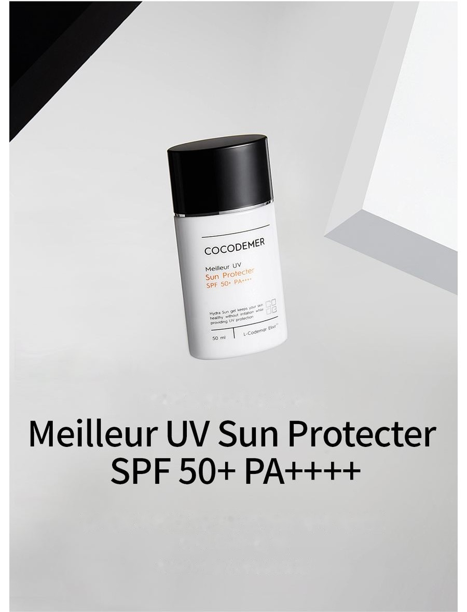
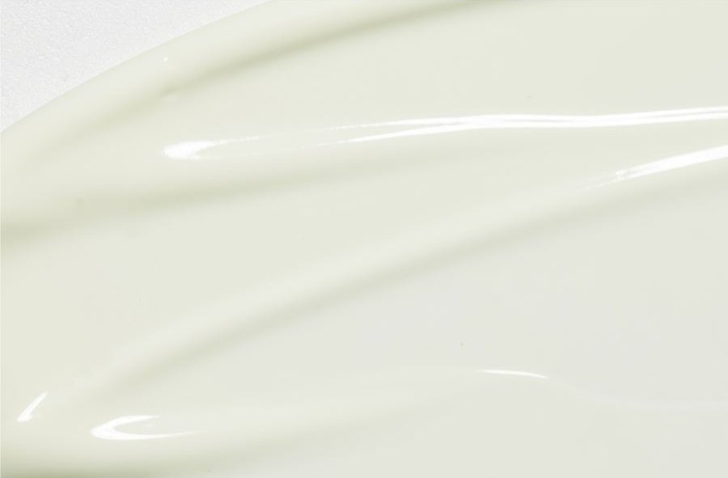
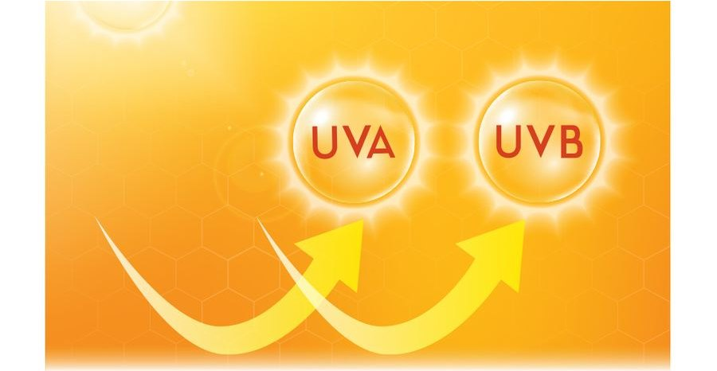
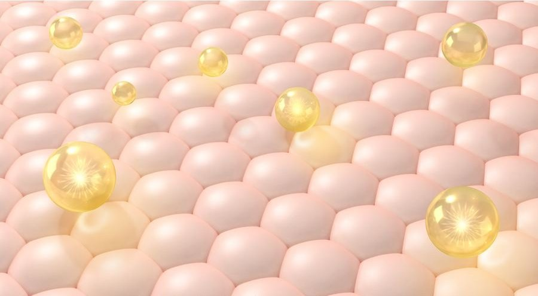

COCODEMER Meilleur UV Sun Protecter
| 容量 | 50ml |
|---|---|
| 適用膚質 | 所有膚質 |
| 核心技術 | L-CODEMAR ELIXIR™ |
| 製造業者 · 化粧品責任銷售業者 | JUNGCOS CO., LTD. / COCODEMER CO., LTD. |
本產品為我們發展客製化妝品系列時開發的產品，目前未販售。如需洽詢再生產或改版事宜，請透過 B2B 諮詢與我們聯繫。

高效防曬、水潤不黏膩的保濕防曬凝膠
完美抵禦紫外線的保濕防曬凝膠
以植物來源成分同時提供三重機能護理的防曬凝膠，適合因紫外線而變得敏感的肌膚。
僅以源自棉花的天然粉體穩定防曬成分，溫和低刺激，有助於防曬。
僅以天然來源粉體穩定防曬成分。在炎熱的夏季不易與汗水混合，並能吸附多餘油脂，讓妝感持久不脫落，在戶外也能維持良好的肌膚狀態。
以天然來源（燕麥）纖維素取代界面活性劑來穩定防曬成分，讓配方溫和低刺激、使用感更輕盈，同時讓肌膚舒適地抵禦紫外線。
一個簡單步驟即可照顧多種肌膚困擾的全能型產品，保護對每次換季都敏感反應的肌膚。
富含水分的水感基底，塗抹瞬間即讓肌膚水潤，帶來輕盈清爽的妝感。
僅以源自棉花的天然來源粉體穩定防曬成分，在炎熱的夏季不易與汗水混合，並能吸附多餘油脂而不脫落，
讓肌膚在戶外活動時維持最佳狀態。
* 以上內容僅適用於該特定成分。
核心活性成分代碼
- Mo保濕保濕劑
- Aw抗皺抗老
- Wh美白美白
- Tb舒緩肌膚問題舒緩肌膚問題
- Bs基底柔軟肌膚

物理性與化學性防曬成分的最佳調配，在肌膚表面形成強韌的防護膜，抵禦紫外線並維持肌膚健康。

源自棉花的天然粉體纖維素，能溫和地阻擋強烈紫外線。配方不含乳化劑，可吸附多餘油脂並耐汗，帶來 Sweat-Proof 的持妝效果。

對於膠原蛋白與彈力蛋白功能隨年齡衰退的肌膚，可刺激其生成，改善肌膚彈性並幫助肌膚恢復。
有助於改善循環的亮膚機能性成分菸鹼醯胺，搭配可抑制自由基的維生素 P 類化合物——生物類黃酮，共同幫助改善膚色。
* 以上內容為成分說明，並非針對成品。
查看成分詳細資訊 →
L-CODEMAR ELIXIR™
COCODEMER 的獨家技術。
以無可比擬的多層奈米凝膠乳化包覆技術，將核心活性成分——椰子水、植物固醇、20 種胺基酸與蜂蜜萃取物——穩定地形成複合體，再將此複合體設計成模擬肌膚本身結構的親膚微脂體形態，使傳遞至肌膚的效率最大化。
L-Codemar Elixir™ 能強化肌膚細胞間的結合力，修護受損屏障並形成強韌的保護膜，讓保濕效果更持久。

上方圖片中的文字
L-CODEMAR ELIXIR™
- 椰子水
- 蜂蜜萃取物
- 20種胺基酸
- 植物固醇

上方圖片中的文字
- 微生物、懸浮微粒、沙塵、污染物與空氣污染
- 過度的水分流失
受損肌膚
受損的細胞間脂質會削弱表皮細胞之間的連結
- 補充細胞間脂質 ↑
- 活性成分
- 抵禦外在壓力與污染物
- 水分流失減少
健康肌膚
補充的脂質讓細胞間基質恢復 → 細胞之間的連結更穩固
使用方法
使用前請輕輕搖勻。於保養程序的最後一步取適量，順著膚紋輕柔推開。
完美抵禦紫外線的保濕防曬凝膠
以植物來源成分同時提供三重機能護理的防曬凝膠，適合因紫外線而變得敏感的肌膚。
僅以源自棉花的天然粉體穩定防曬成分，溫和低刺激，有助於防曬。
僅以天然來源粉體穩定防曬成分。在炎熱的夏季不易與汗水混合，並能吸附多餘油脂，讓妝感持久不脫落，在戶外也能維持良好的肌膚狀態。
以天然來源（燕麥）纖維素取代界面活性劑來穩定防曬成分，讓配方溫和低刺激、使用感更輕盈，同時讓肌膚舒適地抵禦紫外線。
一個簡單步驟即可照顧多種肌膚困擾的全能型產品，保護對每次換季都敏感反應的肌膚。
富含水分的水感基底，塗抹瞬間即讓肌膚水潤，帶來輕盈清爽的妝感。
僅以源自棉花的天然來源粉體穩定防曬成分，在炎熱的夏季不易與汗水混合，並能吸附多餘油脂而不脫落，讓肌膚在戶外活動時維持最佳狀態。
物理性與化學性防曬成分的最佳調配，在肌膚表面形成強韌的防護膜，抵禦紫外線並維持肌膚健康。
源自棉花的天然粉體纖維素，能溫和地阻擋強烈紫外線。配方不含乳化劑，可吸附多餘油脂並耐汗，帶來 Sweat-Proof 的持妝效果。
對於膠原蛋白與彈力蛋白功能隨年齡衰退的肌膚，可刺激其生成，改善肌膚彈性並幫助肌膚恢復。
有助於改善循環的亮膚機能性成分菸鹼醯胺，搭配可抑制自由基的維生素 P 類化合物——生物類黃酮，共同幫助改善膚色。
* 以上內容為成分說明，並非針對成品。
L-CODEMAR ELIXIR™
COCODEMER 的獨家技術。以無可比擬的多層奈米凝膠乳化包覆技術，將核心活性成分——椰子水、植物固醇、20 種胺基酸與蜂蜜萃取物——穩定地形成複合體，再將此複合體設計成模擬肌膚本身結構的親膚微脂體形態，使傳遞至肌膚的效率最大化。L-Codemar Elixir™ 能強化肌膚細胞間的結合力，修護受損屏障並形成強韌的保護膜，讓保濕效果更持久。
使用前請輕輕搖勻。於保養程序的最後一步取適量，順著膚紋輕柔推開。
| 淨重或容量 | 50ml |
|---|---|
| 適用膚質 | 所有膚質 |
| 保存期限／開封後使用期限 | 製造日起 30 個月；開封後請於 12 個月內使用完畢 |
| 使用方法 | 使用前請輕輕搖勻。於保養程序的最後一步取適量，順著膚紋輕柔推開。 |
| 化粧品製造業者 | JUNGCOS CO., LTD. |
| 化粧品責任銷售業者 | COCODEMER CO., LTD. |
| 原產地 | 大韓民國 |
| 全成分（INCI） | Water, Ethylhexyl Methoxycinnamate, Homosalate, Ethylhexyl Salicylate, Octocrylene, Methylpropanediol, Diethylamino Hydroxybenzoyl Hexyl Benzoate, Niacinamide, C12-15 Alkyl Benzoate, Titanium Dioxide, 1,2-Hexanediol, Bis-Ethylhexyloxyphenol Methoxyphenyl Triazine, Arctium Lappa (Burdock) Root Extract, Centella Asiatica Extract, Ficus Carica (Fig) Fruit Extract, Honey Extract, Perilla Frutescens Extract, Carthamus Tinctorius (Safflower) Seed Oil, Cocos Nucifera (Coconut) Water, Hydrogenated Lecithin, Oenothera Biennis (Evening Primrose) Oil, Sodium Hyaluronate, Acetyl Glutamine, Acetyl Hexapeptide-8, Adenosine, Alanine, Alumina, Aluminum Stearate, Arginine, Aspartic Acid, Beta-Glucan, Betaine, Bioflavonoids, Butylene Glycol, Carbomer, Carnitine, Carnosine, Cellulose, Ceramide NP, Cetearyl Alcohol, Cetyl Ethylhexanoate, Citrulline, Creatine, Ethylhexylglycerin, Glucosyl Hesperidin, Glutamic Acid, Glutamine, Glycerin, Glycine, Hydrogenated Phosphatidylcholine, Hydrolyzed Hyaluronic Acid, Hydroxyacetophenone, Hydroxyethyl Acrylate/Sodium Acryloyldimethyl Taurate Copolymer, Inositol, Isoleucine, Leucine, Lysolecithin, Methionine, Myristic Acid, Neopentyl Glycol Diheptanoate, Ornithine, Palmitic Acid, Palmitoyl Pentapeptide-4, Panthenol, Phenylalanine, Phytosterols, Polyacrylate Crosspolymer-6, Polyglutamic Acid, Polyglyceryl-10 Myristate, Polyglyceryl-2 Stearate, Polyhydroxystearic Acid, Polyquaternium-51, Polysorbate 20, Polysorbate 60, Proline, Propanediol, Raffinose, Serine, Sorbitan Isostearate, Squalane, Stearic Acid, t-Butyl Alcohol, Threonine, Tranexamic Acid, Trehalose, Tromethamine, Tryptophan, Tyrosine, Valine, Fragrance (Parfum) |
| 機能性化粧品審查核准 | 亮膚 · 改善皺紋 · 防曬機能性化粧品 |
| 使用注意事項 | 1. 使用期間或使用後，或經陽光直射後，使用部位如出現紅斑、腫脹、搔癢等異常反應，請諮詢專科醫師。2. 請避免用於破損或有傷口的肌膚。3. 保存及使用注意事項 a) 請置於兒童無法取得之處。b) 請避免陽光直射。 |
| 品質保證 | 產品如有瑕疵，將依韓國公平交易委員會公告之消費者爭議解決標準予以補償。 |
| 消費者諮詢 | 010-3307-9341 / cocodemer@cocodemer.co.kr |
* 依韓國化粧品標示及廣告規定須揭露的事項。本內容為參考譯文；如需經認證的成分聲明、CPSR 或 CoA，請透過 B2B 諮詢與我們聯繫。